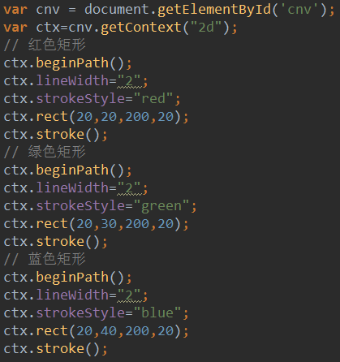
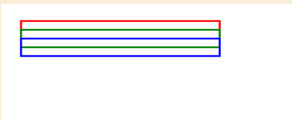
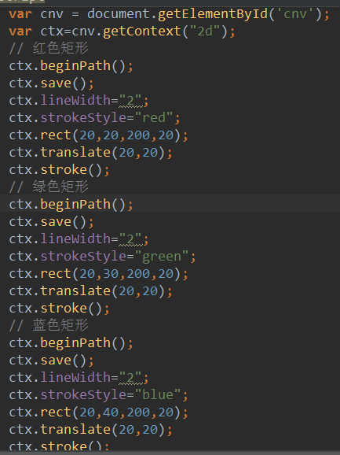
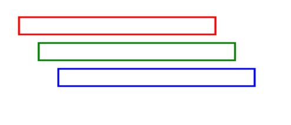
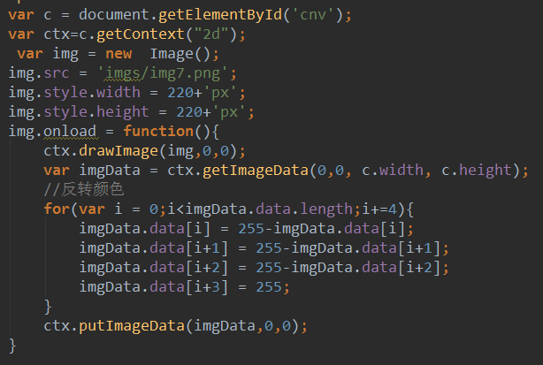

在canvas对象中，save方法把当前状态压入栈中；restore方法从栈顶弹出状态。绘制状态不会覆盖对画布所做的每一件事。save保存canvas状态，保存之后，可以调用canvas的平移、缩放、旋转、错切、裁剪等方法进行操作，再用restore方法恢复之前保存的状态，防止save后对canvas执行的操作有后续影响。save和restore要配对使用（restore可以比save少，但不能多），如果restore调用次数比save多，会引起Error错误。
效果如下：
用ctx.save() 和 ctx.translate(20,20)则可以很方便的排列
效果如下：
 反转颜色 